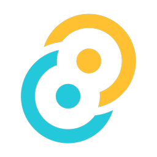

Work Journal
A personal, local-first log of short work notes captured throughout the day, so that what you did is recoverable later.
You write one line whenever something happens. Later — at standup, in a review, or as context for an LLM — you read the day back as Markdown and paste it wherever it needs to go.
It lives in the menu bar. There is no Dock icon, no window to manage, and no app to switch to: a global hotkey opens a single text field, you type a line, and it disappears again.
Everything is local. No account, no server, no network call — the notes are a SQLite file on your Mac, and Export writes the whole journal to Markdown so nothing is locked in.
Download
Download for macOSApple Silicon only. Unsigned and unnotarized — after dragging it to Applications you must clear the quarantine attribute macOS attached to it, or macOS will report the app as damaged:
xattr -dr com.apple.quarantine "/Applications/Work Journal.app"That step is not optional for a downloaded copy. A build you compiled yourself and never moved is not quarantined and needs nothing.
What it does
- Capture a note from a global hotkey, the tray menu, or relaunching the app.
- Read back any range of days, grouped and ordered oldest first.
- Edit a note's wording, move it to another day, or delete it.
- Copy the range you are looking at as Markdown.
- Export the entire journal to a Markdown file.
- Set when your day starts, so work after midnight files under the day it felt like.